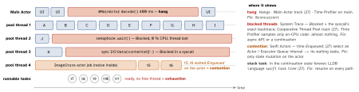

debugging · folio
In one line: Tasks run on the cooperative thread pool (as many threads as CPU cores,
never grows) or on the main actor’s main thread. The runtime’s contract is
forward progress: await suspends and frees the thread; a blocked thread
is simply lost. Four failures follow — main-actor blocking (hang), actor
contention and pool exhaustion (parallel code turned serial, or deadlock),
continuation misuse (leak or crash). Concurrency instruments show task / actor /
executor state; System Trace shows why a thread is not running.
Download PDF Print view LaTeX source


How the runtime behaves
- Pool width = CPU cores, fixed. A GCD concurrent queue adds a thread when one blocks; the pool does not.
- Safe:
await; a lock around a tight, known critical section (Mutex,os_unfair_lock,NSLock). Unsafe: semaphores, condition variables,DispatchGroup.wait(), blocking file / network I/O — they hide the dependency from the runtime. All pool threads waiting on pool work = deadlock. LIBDISPATCH_COOPERATIVE_POOL_STRICT=1(scheme → Run → Arguments): pool width 1 per QoS, so a hidden blocking wait deadlocks now, in dev.- Main actor = the main thread. Each hop main ↔ actor is a context switch: hand over arrays, not one item per hop.
- Where code runs (Swift 6.2): new app projects in Xcode 26 default to
MainActorisolation; Approachable Concurrency turns on SE-0461, so anonisolated asyncfunc runs on the caller’s actor;@concurrentalways switches off it. - Priority: awaiting a task escalates it and its children, never lowered (SE-0462); an actor may run a higher-priority job first. A semaphore or continuation hides who will resume you — no escalation (6.2:
withTaskPriorityEscalationHandler). Thread Performance Checker (TPC; on for Run, iOS + macOS) flags such waits:dispatch_semaphore_wait/dispatch_group_waitcannot pass priority on. Mute known ones:PERFC_SUPPRESSION_FILE.
Instruments + LLDB, release by release
| Xcode (Swift) | adds |
|---|---|
| 14 (5.7) | Swift Concurrency template = Swift Tasks (Running / Alive / Total
Tasks, state per task, Task Forest, creation backtrace, narrative: which Task it waits on) +
Swift Actors (queueing per actor). Needs an iOS 16 / macOS 13 runtime. Thread
Performance Checker; Hang Tracing; leaks / heap label Swift AsyncTask
allocations. |
| 26 (6.2) | Task(name:) names shown (SE-0469; read with Task.name,
groups: addTask(name:)). Stepping follows a Task migrated to another thread. LLDB
language swift task backtrace | select <task>, info (new in 6.2). |
| 27 (6.4) | Swift Executors: tracks for the Cooperative Thread Pool, the Main Actor, each
TaskExecutor / SerialExecutor (OS 27; older: “Unknown executor”).
Swift Task Collection: tasks grouped by name or creation site, lifetimes or states.
Profile detail = call tree of samples taken while a Task / Collection / Actor / Executor
was Running (+ Time or CPU Profiler). Tasks begun before the trace now shown (state
“Unknown”); all-process recordings group Tasks and Executors per process. System Trace: syscalls, VM faults, thread states in one plot; ←/→ walks
the scheduling chain; priority over time graph. Thread Activity: effective QoS per thread.
LLDB language swift task tree. Instruments needs iOS 17+ devices. |
Example — suspend, don’t block
// BAD: parks a pool thread until the callback fires
func thumb(_ u: URL) async -> UIImage? {
let sem = DispatchSemaphore(value: 0); var img: UIImage?
legacyLoad(u) { img = $0; sem.signal() }
sem.wait(); return img } // Blocked, thread lost
// GOOD: the task suspends; resume exactly once
func thumb(_ u: URL) async -> UIImage? {
await withCheckedContinuation { c in
legacyLoad(u) { c.resume(returning: $0) } } }
// CPU work off the caller's actor (6.2); a named task
@concurrent func decode(_ d: Data) async -> UIImage? {
UIImage(data: d) }
Task(name: "thumb") { await show(thumb(url)) }The runtime’s own messages
SWIFT TASK CONTINUATION MISUSE: load() leaked its
continuation without resuming it. // task waits forever
SWIFT TASK CONTINUATION MISUSE: load() tried to resume
its continuation more than once, returning ... // fatalError
BUG IN CLIENT OF LIBDISPATCH: Assertion failed: Block was
expected to execute on queue [com.apple.main-thread (0x...)]Lines 1–2: CheckedContinuation only — UnsafeContinuation (same API) checks nothing. Line 3 = Swift 6’s dynamic isolation check (SE-0423, 6.0): synchronous isolated code reachable from unchecked callers (@objc thunks, @preconcurrency witnesses, closures given to unchecked APIs, calls into Swift 6 modules) gets a compiler-inserted executor check (main actor: dispatch_assert_queue) and crashes instead of racing. Old-SDK apps only log “data race detected”; opt-out: -disable-dynamic-actor-isolation. 0x400000000000bad0 in a crash (ObjC, Xcode 26) = a racing nonatomic property: synthesized setters store that value briefly.
Traps
- “Spawn more tasks” — the pool never grows.
Task.yield()is no starvation fix: the highest-priority task resumes at once.- Blocked ≠ hang: an idle main thread is blocked too — ask Hangs, not thread states.
- Queue inspector (27) skips tasks enqueued before the trace.
- Profiling a Run-launched app: TPC’s checks can show in stacks — use Profile.